Headstones
Matches 1 to 22 of 22
| # | Thumb | Description | Cemetery | Status | Linked to |
|---|---|---|---|---|---|
| 1 | 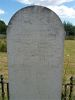 | Addis, Joshua & Eleanor (Archibald) gravestone Beechworth Sacred - To the memory of Joshua Addis, Died 28th May 1877 Aged 75 years. And his beloved wife Eleanor Who died 21st May 1877 Aged 73 years. Also Archibald Addis Died 20th November 1867 Aged 21 years |
| ||
| 2 | 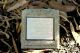 | Arthur Ernest Eamer R.I.P. | Karrakatta Cemetery EC Section / 0049 | Located |
|
| 3 |  | Austinette Addis Final stop ... Cue WA! | Cue Cemetery 413 | Located |
|
| 4 | 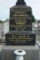 | Bridget Curlie |
| ||
| 5 |  | Edward Borne Hunter and Lucy Addis Eamer Mr&Mrs Hunter R.I.P. | Karrakatta Cemetery Section BL 0020 | Located |
|
| 6 | 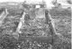 | Eleanor Spencer [R.I.P.] Site has since been recycled; it is no longer [03/2008] | Karrakatta Cemetery | Located |
|
| 7 | 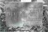 | Eleanor Spencer [R.I.P] Site has since been recycled; it is no longer [03/2008] | Karrakatta Cemetery | Located |
|
| 8 | 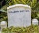 | Generic Headstone ... for stillborn children |
| ||
| 9 | 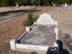 | Gravesite: Norman Willows - Mabel Howse | Karrakatta Cemetery | Located |
|
| 10 | 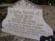 | Headstone: Norman Willows and Mabel Howse | Karrakatta Cemetery | Located |
|
| 11 |  | Jack Eamer and Jean Donohoe RIP as Mrs&Mrs JEamer | Karrakatta Cemetery EC Section 16/0241 | Located |
|
| 12 | 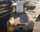 | James Valentine Dwyer At rest as James Smith | Meekatharra Cemetery |
| |
| 13 | James Valentine Dwyer At rest as James Smith | Meekatharra Cemetery | Located |
| |
| 14 | 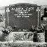 | Martha Kuhn as Martha Gade, RIP 21 Mar 1957 |
| ||
| 15 | 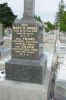 | Mary Bridget Donohoe buried as Burke |
| ||
| 16 | 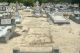 | Mary Gade [as Eamer] R.I.P. Lot 0281, Section GA, Wesleyan Denomination | Karrakatta Cemetery Lot 0281, Section GA | Located |
|
| 17 | 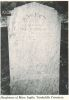 | Mary Robertson | Crystal Brook |
| |
| 18 | 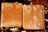 | Nellie Mary Spencer 7th Jan 1901 - "We loved this little tender one, and would have wished her to stay; But let our Father's will be done - she shines in endless day." Erected by her Aunt - Eleanor Willows (nee Spencer) | Cue Cemetery Lot 91 | Located |
|
| 19 |  | Olive Rowe Resting place |
| ||
| 20 |  | Olive Rowe Gravesite |
| ||
| 21 | 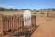 | Samuel Inglis (Miller Sam) Buried Blinman Cemetery 28th Sep. 1887 | Blinman Cemetery | Located |
|
| 22 | 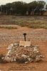 | Spencer Tragedy in the Muchison Nellie Mary and Herbert Milton Spencer - Together forever | Cue Cemetery Lot 91 | Located |
|